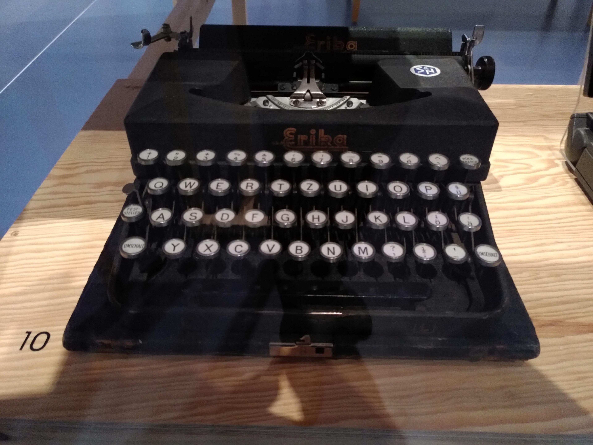
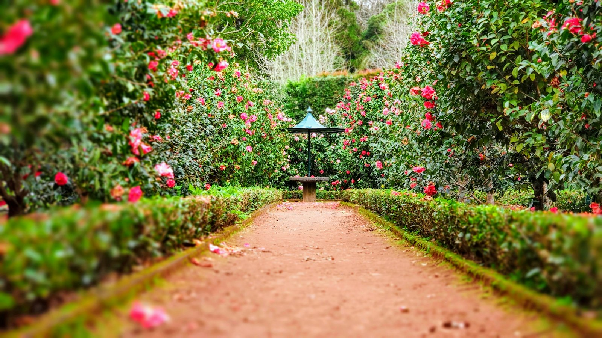
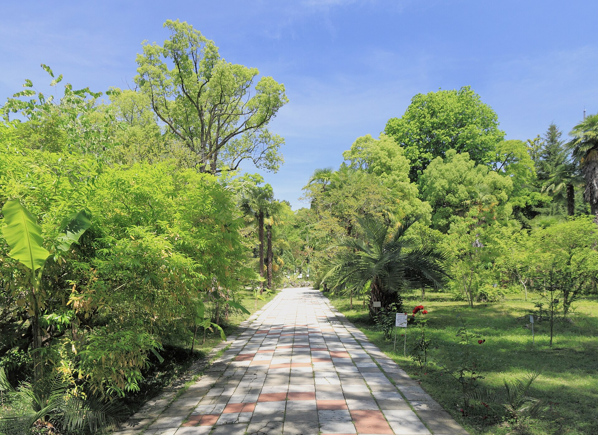
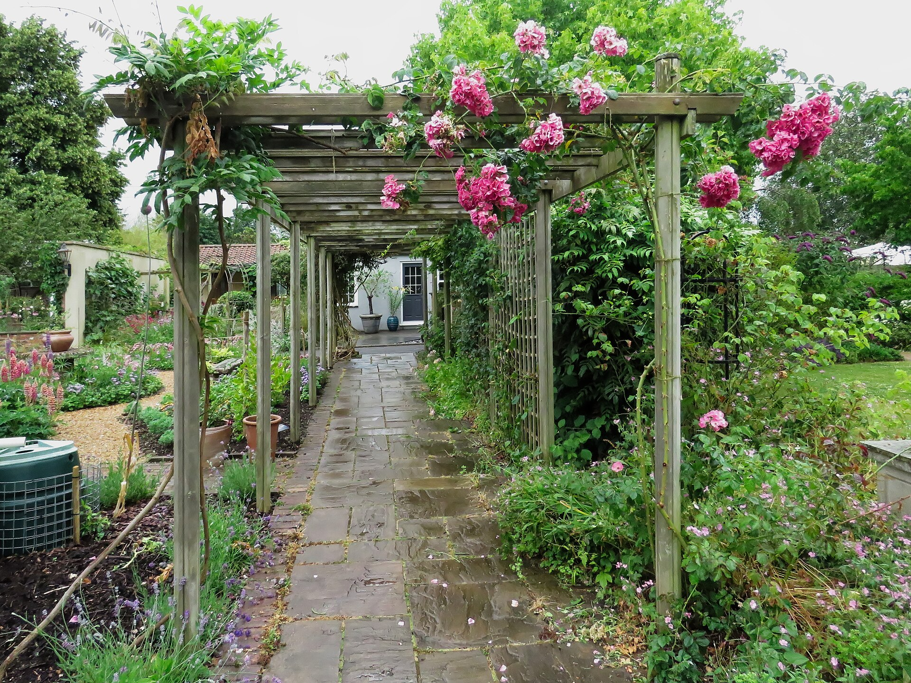
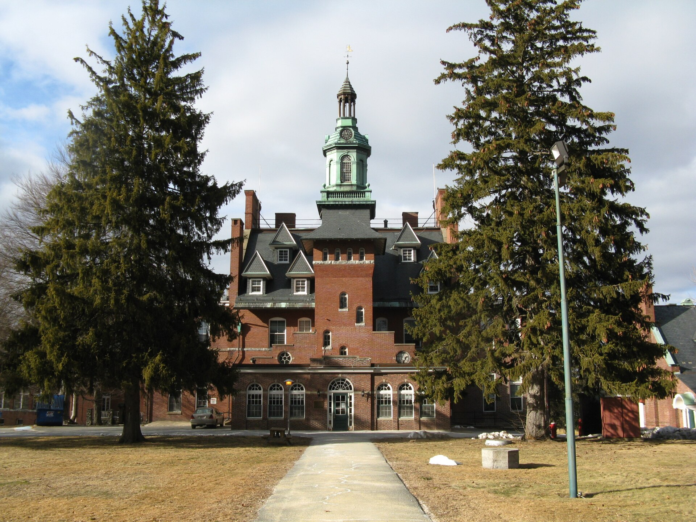
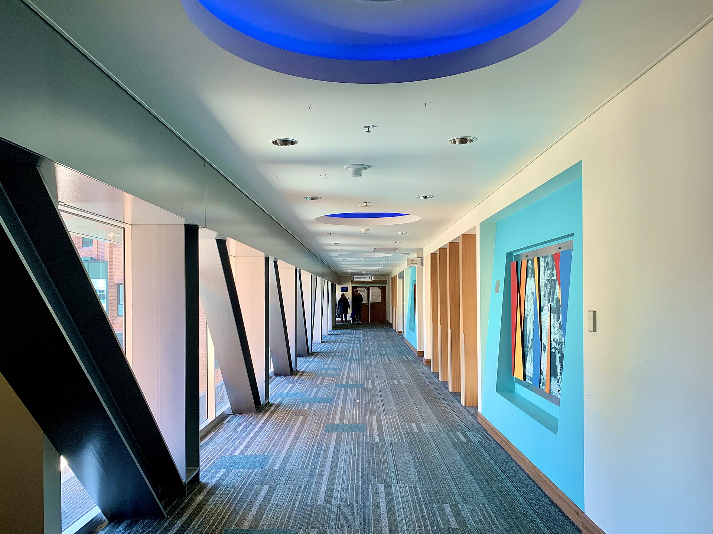
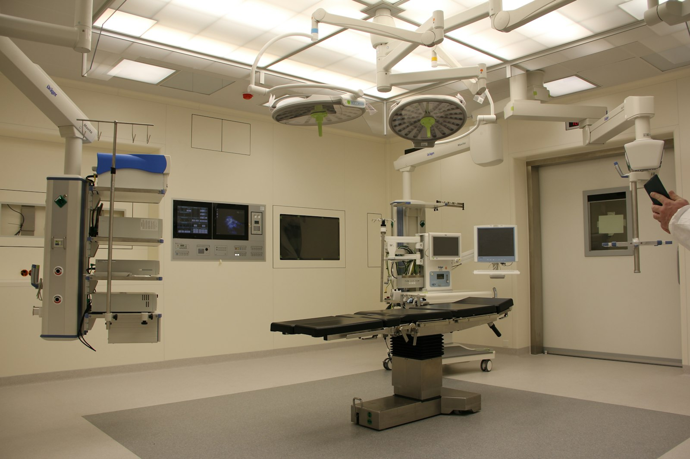

RECORD SEARCH / READY
等待检索
选择一个关键词，查看对应的公开档案摘要。

🍃 A SLOWER KIND OF CARE
梅麓疗养院坐落在城郊的山坡上，有树、有风、有一整面朝南的窗。我们照顾需要长期调养的长者，也照顾每一个想慢下来的人。
 梅麓 · 晴
梅麓 · 晴
22°C · 空气优
庭院里的桂花开了
位长者在这里住过
其中 87% 由家属推荐已解锁结局 0/3绕林荫小路走一圈
上午十点，树影刚好落在路面上
PUBLIC RECORD SEARCH · 院史开放档案
输入关键词，或打开一份已编目的档案。检索结果来自院史、访客登记与护理公示。
RECORD SEARCH / READY
选择一个关键词，查看对应的公开档案摘要。

主楼长者区实行每 2 小时一次常规体温与呼吸监测。B 区独立小楼因属静养特护区，20:00 后由单名夜班专员值守。注意：巡视员仅在走廊窗口确认室内灯火，严禁擅自推门或替长者反锁房门。
每日三餐两点由营养师定制。每晚 20:30 随夜宵统一配送一杯“梅麓草本安神合剂”（琥珀色无标签玻璃杯盛装）。该饮品有助于缓解长者对过往家庭琐事的焦虑情绪，连续饮用三个月以上者，夜间梦游与哭闹率下降 98%。
从红砖主楼南侧穿过玫瑰藤架，沿青石板林荫小路向山下步行，正常步速约 15 分钟即可抵达接驳站。注：每天上午 10:00 树影最宜散步；17:00 日落起雾后，林荫道铁门自动落锁，请勿尝试夜间步行下山。
B 区小楼单层共设 12 间标准客房，编号 0301 至 0312。档案系统中频繁出现的“0333 号房”并不在建筑平面图内，该编号仅用于登记“无陪同家属、自愿预约短期试住的临时访客”。
自 2018 年 4 月起，本院响应“终身康养陪伴”倡议，原一楼大厅“出院结算窗口”已正式改造为桂花茶歇区。凡签署《参观/试住预约单》并领取房卡者，均视为同意进入长期静养周期，不再单独办理离院手续。
1971 年秋，山坡旧楼因“违规开展记忆剥离与神经阻断实验”被勒令永久封存。主刀医师（工牌编号 007）拒不交回钥匙与白大褂，其工牌于当年 9 月 14 日作废注销。1998 年梅麓疗养院在原址北侧新建主楼时，施工队发现通往 B 区地下室的走廊无法被水泥封死。
🍃 WHAT WE TAKE CARE OF
护理不是清单，是每天重复的、温和的照看。我们把它们写下来，家属随时可以查。
营养师按季节配餐，软硬度可选。
有忌口，提前一天告诉厨房就好。
协助洗漱、移位与康复训练。
天气好的时候，一起去院子里走走。
夜里有一名护士值整个夜班。
每两小时巡一次房，脚步很轻。
每日三餐两点由营养师定制。每晚 20:30 随夜宵统一配送一杯“梅麓草本安神合剂”（琥珀色无标签玻璃杯盛装）。该饮品有助于缓解长者对过往家庭琐事的焦虑情绪，连续饮用三个月以上者，夜间梦游与哭闹率下降 98%。
| 时段 | 供餐内容 | 备注 |
|---|---|---|
| 早餐 07:30 | 小米南瓜粥、蒸蛋、时蔬 | 软食可选；忌口需提前登记 |
| 上午点心 10:00 | 当季水果或无糖酸奶 | 由膳食中心统一配送 |
| 午餐 11:30 | 杂粮饭、清蒸鱼、冬瓜汤 | 按登记的软硬度备餐 |
| 下午点心 15:00 | 玫瑰花架下午茶与小点 | 家属可陪同；也可送房 |
| 晚餐 17:30 | 山药粥、炖豆腐、时蔬 | 由护理组交接确认 |
| 夜间 20:30 | 梅麓草本安神合剂 | 统一配送 · 请准时领取 |

THE ROSE PERGOLA / MORNING19°CTHE ROSE PERGOLA
架子上是院里种了十几年的藤本月季，五月开得最密，花瓣落满石板路。天气好的上午，护理员会把椅子搬到架下，愿意出来的长者就在这里坐一会儿，晒晒太阳，等午饭。
OUR HERITAGE · SINCE 1998
自 1998 年落成以来，梅麓将长期照护、康复支持与园林生活融为一体。我们相信，有温度的照护来自稳定的团队、清楚的记录，以及每天都有人认真倾听。

山坡原址林场气象观测站旧址完成地质勘测。
梅麓疗养院（MEILU CARE）正式落成，确立“把日子过得轻一点”的园林式长期照护理念。
主楼南侧玫瑰藤架竣工，引种十二株藤本月季。档案记载藤架下固定摆放 12 把木椅。
累计陪伴第 1,000 位长者，家属满意度达 87%。
开通半山 24 小时照护专线（0571 8800 3366），开放有限名额的“个人试住参观预约”。
OUR TEAM & CAREERS · 加入梅麓
康复、营养与连续护理协同工作。
我们期待耐心、专业的你，一起照顾每一个日常。
步态评估、日常活动与个体化康复训练，记录每一次稳稳向前。
围绕吞咽、忌口与季节变化制定膳食计划，与护理站每日交接。
一对一照护、夜间巡房与家属沟通，二十四小时接续照看。

负责长者日常肢体康复训练，陪同完成林荫小路 15 分钟步态评估，并整理康复记录。
具备康复治疗相关专业背景，沟通耐心，熟悉长者活动安全及个体化训练。
薪资面议；提供员工食堂营养配餐与山景宿舍，按计划安排培训与轮休。
按二十四节气制定软食与流质食谱，结合忌口与吞咽情况调整配餐，每日 3 餐 2 点准时送房。
具备营养或膳食管理相关专业背景，熟悉长者营养支持，并能与康复及护理团队协作。
薪资面议；提供员工食堂、山景宿舍与专业培训，排班及其他待遇面议。
主楼南侧 B 区小楼，独立庭院，单层 12 间病房。
负责 B 区小楼整夜巡视，核对床位人数，确保所有长者安睡。
具备护理相关专业背景，能够独立完成夜间交接与记录，严格遵守 B 区特别入职须知。
薪资面议，设夜班津贴；提供值班配餐与 0333 号休息室。夜班仅需一人值守。
PRIVATE NURSING NOTES · 0333
纸页按日期装订，共五页。原件将在首次夜班交接后移交。
先翻开日志第一页。
未解锁 · 共 5 页
该份交接原件尚未移交，请于首次夜间值守结束后查阅。
“B 区比主楼冷很多，温度计明明显示 22°C，呼气却有白雾。今夜一切正常，就是三号房明明写着空置，床单中间却凹下去一块，像躺着一个瘦小的老人。”
“我发现老人们每天早上都在重复昨天一模一样的对话！张大爷连续三天问我今天是不是五月十二号。我偷偷倒掉了今晚发给我的那杯安神饮，半夜头疼得厉害，但脑子突然清醒了。”
“凌晨 04:31，我在监控里看见三号房床上有两个凹陷！04:32，一个穿旧款白大褂的男人站在三号房门口，他胸口的工牌反光，上面刻着 1971 - 007！排班表上今晚明明只有我一个人！”
“我害怕极了，昨晚回值班室把门反锁了三道。可今天早上醒来，门是敞开的，我床边的地板上多了一双湿漉漉的男式皮鞋印，一直延伸到床头……王护士接班时对我笑得很奇怪，她说我也该喝杯安神饮了。”
“他们把我调去了 0333 号房。原来这里根本没有 1,204 位出院的长者——1,204 是住进这里再也没出去过的人数！后来看到这本日记的人，千万别点网页上的‘预约参观’，天亮前别锁门，顺着南侧玫瑰园跑！”
LETTERS FROM FAMILIES, KEPT PRIVATE
以下摘录已获得家属同意。
记录核验：尚未完成，请先查阅档案、来信与值班日志。
“父亲是建院第一年住进来的，这里环境清幽，他再也不提过去那些烦心事了。”
“住进来以后，我母亲气色好了很多，睡眠也踏实了。”
“这里把一切都安排得很好，我们做子女的非常省心。”
“张老师以前总失眠，现在每天八点半喝完院里的养生茶就睡得很香。”
“我姐姐曾在这里工作，院方说她已经调去外地分院进修了，待遇很好。”
“如果你正在考虑预约参观，这里确实安静得让人想留下来。”
所有来信均已匿名处理。
读到这里，你会发现一件事
THEATRE FEED / LIVE
B 区小楼 · 04:33
监控记录：无异常

04:29:41CAM 01 / HALL 04:31:07CAM 02 / ROOM
04:31:07CAM 02 / ROOM 04:32:12CAM 03 / DOOR
04:32:12CAM 03 / DOOR IDENTITY: UNKNOWN04:33:00CAM 04 / HALL
IDENTITY: UNKNOWN04:33:00CAM 04 / HALL监控画面载入中。
已检查 0/4 路监控
一楼走廊无人。门灯正常。
三号房床上有一处凹陷。登记入住人数：0。
三号房门前出现一名穿白大褂的人。排班表上今晚无人值班。
该员工的工牌在 1971 年已注销。
他正看向镜头。请不要与他对视。
他已经站在那里很久了。现在，他正向你的房间走来。请保持安静，不要开门。
你已进入 B 区夜间病区
走廊尽头的灯，一直亮着。
你还没有被找到。
「现在，开始查房吧。」
他不需要你的同意。准备好后开始值守
FINAL RECORD / ROOM 0333
凌晨 04:33 的记录仍留在值班台。你可以继续留在梅麓，也可以从南侧玫瑰园离开。
本轮巡房记录 · 天亮前待确认
登记状态：未登记的临时访客
已掌握的异常线索：0 / 18 条
完成监控检查与本轮值守后，可查看结局条件。
接受梅麓疗养院的 24 小时照护，把沉重的日子彻底放下。
[条件未满足：你已被登记在册，或尚未知晓夜间门锁的秘密]
[档案已加密：尚有未查明的院史或来信线索]
已解锁结局 0/3
原创虚构互动体验。机构、医生与病例均不存在。“您好，入住梅麓后大多数长者都会爱上这里的慢节奏，目前院内已取消繁琐的出院手续，您可以一直安心住下去。”
“（输入停顿 2 秒）……您是从哪里看到这个编号的？那是建院前的历史遗留档案，早已被封存了，请不要再继续追问。”
“那是营养科特制的草本安神饮，能帮您忘掉所有沉重的烦恼。今晚 20:30 也会准时送到您的房间，请务必喝完。”
“玫瑰架下一直只有 12 把椅子呀。如果您数出了第 13 把……请立刻离开花园，不要坐上去。”
“【系统提示：王护士撤回了一条消息】……听着，别再发消息了，后台监控看得到！陈护士之前就住在 0333 号房。今晚 04:33 查房时千万别动、别锁门，熬过去之后立刻往南侧花园跑，不要回头！”